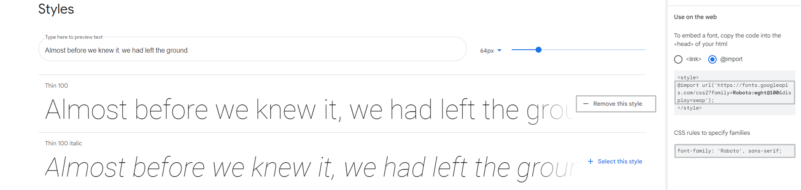
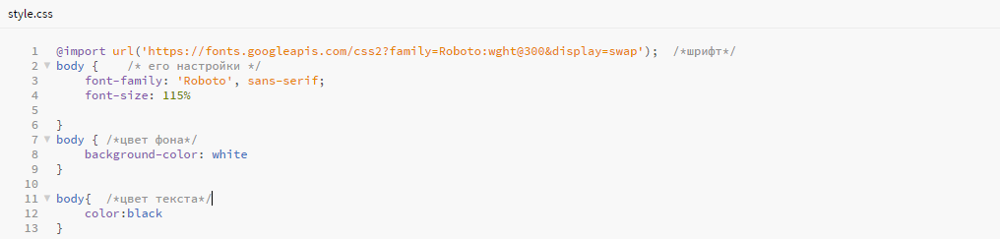

Создать такой же не составит трудности ни у кого. Чуть ниже я приложу скриншот всего написанного кода (которого меньше, чем простого текста).
Когда я говорил, что такой сайт может создать каждый, я не утрировал. В целом, HTML очень прост в освоении, а что самое главное, по нему есть множество материалoв в сети Интернет. К тому же, быть программистом сейчас престижно и можно всем рассказывать о том, какой ты невообразимо крутой. Сейчас, для самых маленьких, я расскажу и покажу, как сделать такую стильную и красивую страничку.
Итак, начнем с самого простого. С того, без чего твой сайт не будет работать. Если честно, мне не очень хочется разбираться что это, потому что пока все работает, я предпочитаю все оставить, как есть. Но ради тебя я готов найти всю информацию.
Теперь ты готов приступить к написанию кода. Ну как кода. Для написания такой простой странички нужно знать всего несколько команд:
Вот и все, теперь содержмое твоего сайта зависит лишь от твоего вообажения. Но вот ты уже разобралс в коде и внезапно решаешь, что тебе необходимо сменить шрифт, цвет фона и т.д. Что же делать? С этим поможет язык CSS. Для этого нужно лишь создать СSS файл в директории проекта. Если хочешь изменить шрифт, то для этого пригодиться сайт Google Fonts. Переходим на сайт и выбираем понравившийся шрифт. Лично мне понравился шрифт Roboto. Кликаем по нему и нажимаем на "select this type". Справа отроется шторка, кликаем на import и копируем ссылку на шрифт и его семейство.
Далее переходим в файл CSS, вставляем ссылку на шрифт, создаём блок "body" и указываем семейство и размер шрифта.
Готово. Для изменение цвета заднего фона, опять создаем блок body, прописываем background-color: и код или название нужного цвета. Также, возможно, тебе захочется поставить другой цвет шрифта. Для этого нужно снова прописать body в CSS файле, написать color: и желаемый цвет.